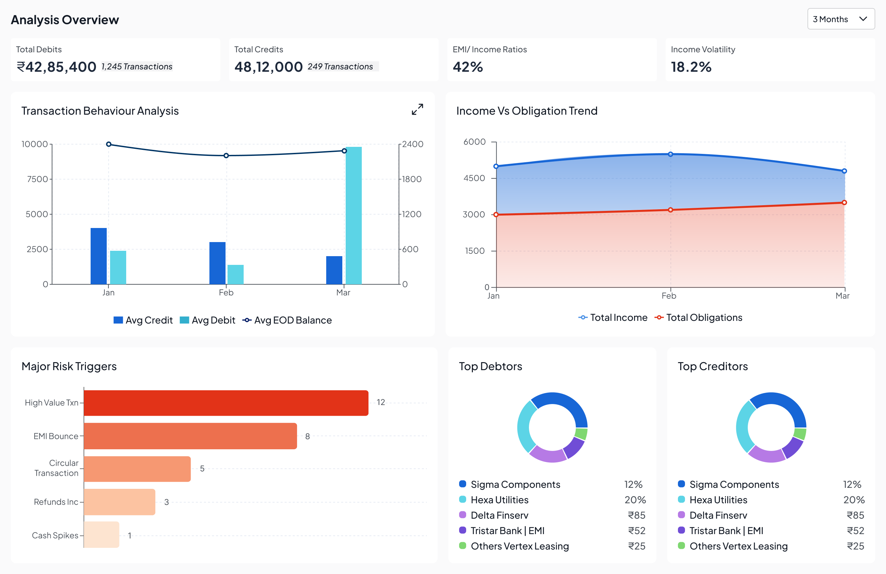
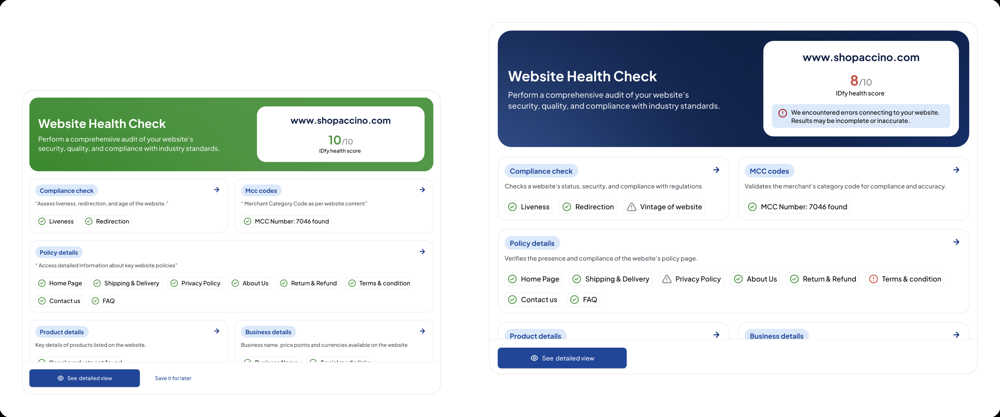
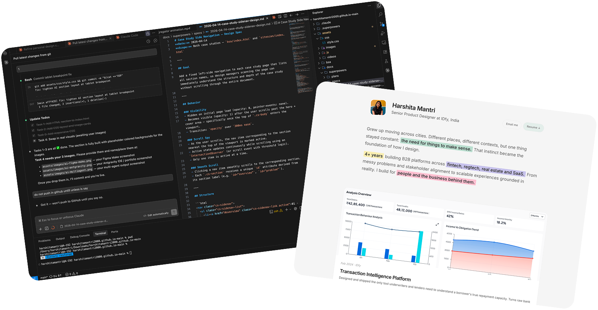
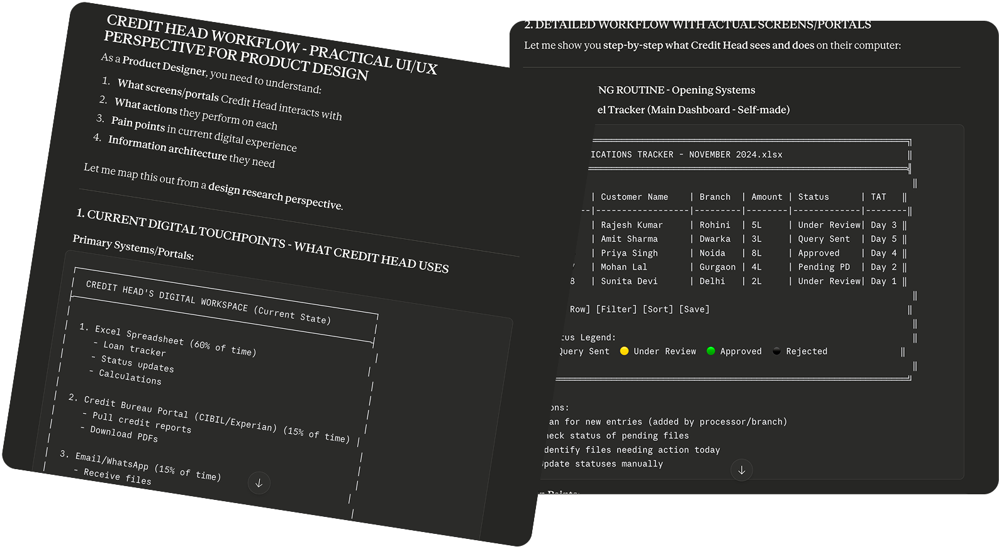
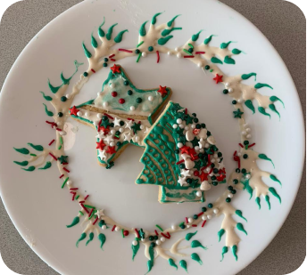
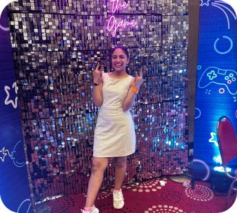
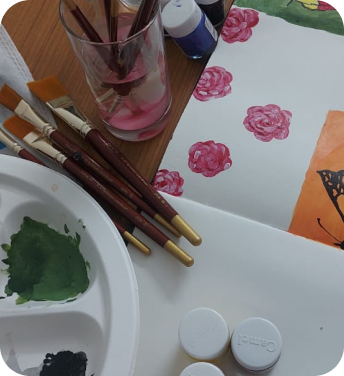

Grew up moving across cities. Different places, different contexts, but one thing stayed constant: the need for things to make sense. That instinct became the foundation of how I design.
4+ years building B2B platforms across fintech, regtech, real estate and SaaS. From messy problems and stakeholder alignment to scalable experiences grounded in reality. I build for people and the business behind them.

Designed and shipped the only tool underwriters and lenders need to understand a borrower's true repayment capacity. Turns raw bank statements into actionable insights that drive faster decisions.
Cutting TAT by 80% compared to market standards and driving client growth for IDfy.

Redesigned a B2B compliance scanning tool built for payment gateway companies like Razorpay to verify merchant websites against regulatory requirements.
Reduced ops team TAT by 60% and improved net promoter score from 1★ to 4-5★.
Also made
Design possible scenarios that a user may encounter during the auto-OTP detect & submit flow with credit card payments.
Consent & document collection flow · Sole proprietorship onboarding

End-to-end prescription builder design · Rapha Health
How I use AI
Early concept exploration with Figma Make
Used AI-generated interactions to rapidly test layout and flow ideas before committing to high-fidelity screens. Cut early exploration time dramatically.

Working like a design builder with Antigravity IDE
From this portfolio to actual office flows — designing and shipping end-to-end using Antigravity IDE, pushing directly to GitHub without writing a line of code manually.

Claude as my design partner
Content writing, research synthesis, persona building, and running usability test scenarios — all with Claude as a collaborative thinking partner.
Meet the designer
Most people find design in college. I found it long before I had a word for it.
- Made birthday cards for literally everyone. Never once skipped craft homework. Spent evenings in Illustrator while classmates wrote code.
- Final year, everyone chased developer roles. I walked into a product design internship instead. No backup plan. Friends called it risky. I called it obvious.
- Went from making things look good to asking why do people struggle here? That question changed everything.
- Design stopped being a craft. It became a way of thinking about people. And I've never looked back.

- IDfy Senior Product Designer Feb 2023 – Present · Mumbai
- Zuma Junior Product Designer 2022 – 2023 · Bengaluru
- NoBroker UI/UX Intern 3 Months · Remote
- obsessing AI-native workflows, and what changes when the tool thinks back
- reading something about habits, probably. always habits.
- planning my next trek. suggestions welcome.



I believe great design is the difference between a tool users trust and one they work around.